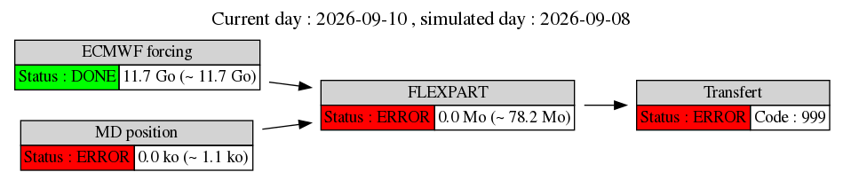
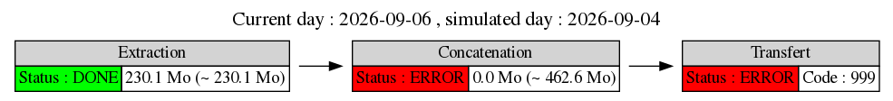

Operational
Monitoring
Status plots for ongoing MAP-IO workflows.
FLEXPART workflow — MAP-IO

WEB workflow — MAP-IO

Operational
Status plots for ongoing MAP-IO workflows.
FLEXPART workflow — MAP-IO

WEB workflow — MAP-IO
